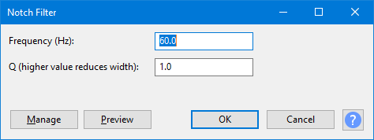
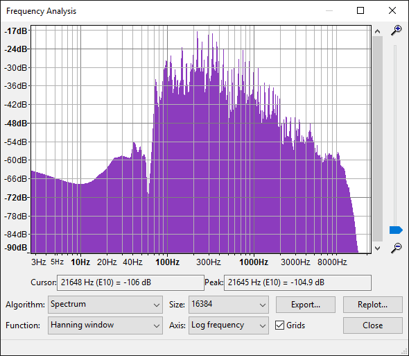
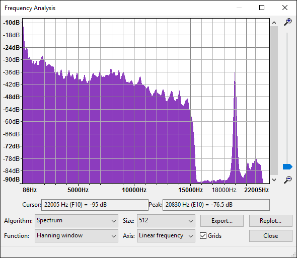

Notch Filter
- Accessed by:
- 
{kind=link}
Frequency
Enter any frequency up to half the sample rate into the frequency text box (default is 60 Hz). Frequency greater than half the sample rate of the track are not valid because a track can only contain frequencies up to half its sample rate.
Q factor
This determines the width of the notch cut from your audio (default value is 1). Values above 1 create a narrower notch, and values below 1 create a wider notch. The Q Factor must be at least 0.1).
Buttons
Clicking on the command buttons give the following results:
- gives a dropdown menu enabling you to manage presets for the tool and to see some detail about the tool. For details see Manage presets.
- plays a short preview of what the audio would sound like if the effect is applied with the current settings, without making actual changes to the audio. The length of preview is determined by your setting in , the default setting is 6 seconds.
- applies the effect to the selected audio with the current effect settings.
- aborts the effect and leaves the audio unchanged.
 brings you to the appropriate page in the Manual, this page.
brings you to the appropriate page in the Manual, this page.
Examples
Example 1: Mains Hum Removal
Choose 60 Hz as "Frequency" for North America, or 50 Hz for the United Kingdom and most other countries. A table of mains frequencies by country is here.Recorded hum often contains noisy harmonic frequencies above the fundamental frequency of the hum. A good approach is thus to apply Notch Filter to the fundamental hum frequency (for example, 50 Hz or 60 Hz), then use to identify other broad noise spikes (for example, at 180 Hz and 300 Hz). You may want to increase the spectrum Size and use the "Log" Axis to see more clearly. Run Notch Filter again at each of the other noise frequencies, then use at mild settings to remove any residual harmonics.
- It is recommended to increase the Q factor when removing higher harmonics so as to lessen possible audio artifacts. Generally, a Q of between 2 and 10 works well for mains hum removal. Choosing appropriate Frequency and Q factor settings from the noise spikes in Plot Spectrum is an approximation, due to inevitable interpolation errors from whichever "windowing" function is chosen. However a good method for calculating Frequency and Q factor from Plot Spectrum can be found in this Audacity Forum topic.
The below image shows a spectrum plot of some music from which a notch of 60 Hz hum has been cut. Before applying the effect, the hum displayed a prominent spike at this frequency, extending to the top of the graph.
- 
Example 2: High pitched whistle
- 